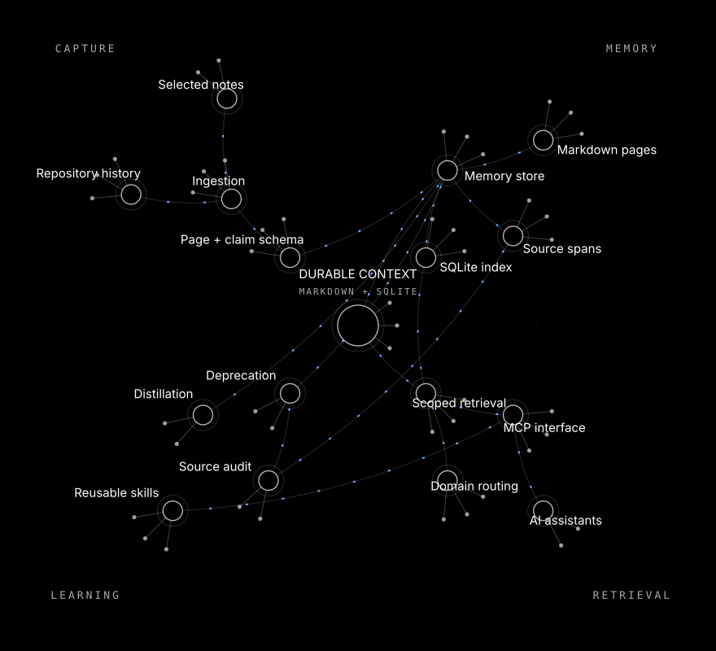

Connected memory.
Continuity by design.
Projects change. Conversations end.
The useful work should remain connected.
Optimus keeps project knowledge in readable pages, connects it to sources and gives AI assistants a focused way to retrieve it.
The neural architecture
Public modules, declared connections.
Drag a neuron to arrange it. Drag empty space to pan. Select to inspect; reset restores the original map.
Browse every module with the keyboard
The graph is generated from a curated public module table. No personal corpus counts or query scores are shown.
A brain assistants can use.
Persistence, retrieval, reuse.
Keep the original context.
Optimus preserves selected repository history, notes, decisions and source references. Markdown is the memory source of truth; SQLite provides a rebuildable index. A new session can inspect retained records instead of depending on the previous conversation.
core/ingest.py · core/schema.py · core/store.py
Retrieve the relevant part.
Scoped retrieval ranks relevant pages and returns citations. The MCP interface exposes focused operations to compatible assistants. A no-match outcome stays visible when the relevance threshold is not met.
core/domains.py · core/query.py · mcp/server.py
Turn experience into guidance.
Source audits flag drift. Deprecation records obsolete context. Reusable skills give the next assistant concrete procedures, including the orbit and blackline visual language used here. Accumulation is useful only when the right context is found and checked.
core/audit.py · core/deprecate.py · project skills
Account for research.
A separate research companion maintains a durable inventory, original evidence and independent discovery, capture and review states. A checked 18 October 2026 collection captured 106 adverts and saved and parsed 7 attachments; two enumerations of 6 results pages matched. Eligibility review is separate.
Collection receipts are aggregate observations. Private school material is excluded.
The visual library
One language across projects.

Open the generated neural map SVGThe original orbit / blackline direction: white structure, blue forward flow and orange learning. The SVG is self-contained and works as a GitHub image. The interactive map adds module details and navigation.
Read the visual skillContinue in your own tools.
Local context, compatible clients.
Connect through MCP.
Register the local engine in a compatible client, start a fresh session and inspect its tools. Then retrieve a specific project question and check its sources. The research companion is a separate installation.
Installation and connection guideThis static site has no private backend, account connection or model endpoint. ChatGPT.com requires a separately configured supported connection. Optimus is a memory and tool layer, not a newly trained foundation model.